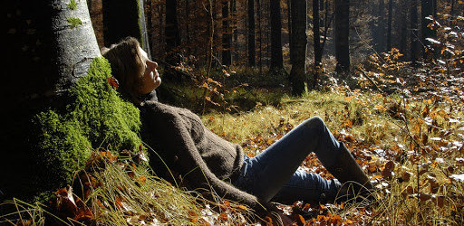

 -> Archiwum
Prezentów od leśnego przedsiębiorstwa dostajemy sporo. Są to: 1. Zmniejszenie stresu – w 1982 roku zrodził się pomysł leśnej aromaterapii dla zapracowanych Japończyków o nazwie shirin-yoku, co dosłownie oznacza leśną kąpiel. W pierwszych badaniach uczestniczyło 280 ochotników, których podzielono na dwie grupy. Oczywiście jedna z grup przez jakiś czas spacerowała po lesie, druga przebywała w środowisku miejskim. Grupie leśnych spacerowiczów pomiary parametrów ciała oznajmiły jednoznacznie, że tętno, ciśnienie krwi oraz poziom hormonów stresu (kortyzolu i adrenaliny) uległy obniżeniu. Badani stwierdzali, że w lesie nie odczuwali zmęczenia, złości i podenerwowania. Zmalała tendencja do zamartwiania się, a wzrósł bieżący optymizm. Na dłuższą metę regularne leśne spacery uczą cierpliwości i długotrwałego spokoju ducha. Dlatego też taka terapia zalecana jest osobom z depresją i o obniżonym nastroju. Zmniejszenie wewnętrznego napięcia zwiększa poczucie własnej wartości. Zgodnie z teorią, że współczesna epidemia depresji jest skutkiem postępu cywilizacyjnego i odcięcia od natury, kąpiel leśna wydaje się bardzo pomocna. Zespół neuronaukowców z całego globu stwierdził jednoznacznie, że 90-minutowy spacer w lesie wycisza korę przedczołową mózgu, która stymuluje nas do rozmyślań o problemach i troskach, i to nie tylko u osób z depresją. Chlorofil – zielony barwnik roślin – działa kojąco na umysł i rekonwalescencję po zabiegach. Monoterpeny – olejki eteryczne o zapachu żywicy w lasach iglastych – uspokajają, łagodzą stany lękowe, przywracają równowagę psychiczną. Do tego do naszych uszu dochodzi kojący szum koron drzew i odgłosów ptaków, a nasze oczy pielęgnuje panujący w lesie półmrok. Wszystko to razem sprawia, że w lesie nabieramy dystansu do siebie i świata. 2. Niszczenie drobnoustrojów – fitoncydy (od łac. phytón – roślina, caedo – zabijam, ścinam) to substancje roślinne mające za zadanie hamować rozwój mikroorganizmów. Działają więc przeciwbakteryjnie, grzybobójczo, przeciwpierwotniakowo, zmieniając skład mikroflory w atmosferze. Fitoncydy sosny uśmiercają prątki gruźlicy w 3 minuty. Nie bez powodu sanatoria dla osób z chorobami układu oddechowego umiejscawia się pośród borów sosnowych. Dęby niwelują bakterie czerwonki. Jałowiec zaś podczas upalnej pogody wydziela swoją broń – jeden jego hektar daje 30 kg substancji lotnych, które są w stanie wyjałowić duże miasto. By jednak fitoncydy pomogły naszemu zdrowiu, należy wdychać je z powietrzem w miejscu wytwarzania, bo wyodrębnione z roślin szybko tracą swoje właściwości. 20 minut w lesie daje taki sam skutek dotleniający jak 20 minut w komorze tlenowej. 1 m sześc. powietrza leśnego zawiera od 46 do 76 razy mniej żywych czynników chorobotwórczych niż powietrze miejskie. Co więcej, drzewa tworzą wokół siebie specyficzną kilkumetrową strefę ochronną wolną od drobnoustrojów. Zespół naukowców – Omid Kardan i Marc G. Bergman z Wydziału Psychologii Uniwersytetu Chicago oraz Peter Gozdyra z Institute for Clinical Evaluative Sciences w Toronto – stawiają zgodną tezę, że zielone wzmacnia. Oczywiście nie o dolarach tutaj mowa, ale o drzewach. Skrupulatne badania naukowców dowiodły, że im więcej drzew w otoczeniu, tym większa odporność organizmu i mniej problemów kardiologicznych. Co więcej – wystarczy 11 drzew więcej wokół bloku mieszkalnego, by obniżyć dolegliwości sercowe i metaboliczne. 3. Wzmocnienie zdolności poznawczych – para psychologów, Rachel i Stephen Kaplanowie, bada wpływ przyrody na funkcjonowanie człowieka, głównie na relacje społeczne i ogólne samopoczucie. Dowodzą, że obcowanie z przyrodą i kontemplowanie jej walorów przekładają się na poprawę skupiania uwagi. Takie środowisko nazywają środowiskiem wzmacniającym. Już sam widok roślinności (nawet jej rysunku!) zwiększa zadowolenie z pracy, ułatwia podejmowanie decyzji oraz przyspiesza powrót do zdrowia. Pomyśleć tylko, co dopiero może zdziałać spacer pośród niej! Najlepiej obrazuje to rozwój dzieci. Dzieci, które uczą się świata przyrody na żywych eksponatach, pośród łąk i lasów, a nie tylko z książek, dużo lepiej się koncentrują na zadaniach i wykazują lepszy stopień zapamiętywania. To dlatego, że żywa przyroda lepiej stymuluje zdolności poznawcze. Do tego zwiększa zdolności motoryczne – zwinność, równowagę itp. Rozwija także wyobraźnię przestrzenną. Dzięki asocjacji, czyli zespolonemu zaangażowaniu wszystkich zmysłów podczas namacalnego poznawania świata ożywionego, budowane więzi międzyludzkie są silniejsze, szacunek większy, a empatia głębsza. Więc do lasu marsz! I to bez żadnych wymówek. Powiedzenie głosi, że nie ma złej pogody, jest tylko złe ubranie. Poprawa pogody ducha gwarantowana, niezależnie od pogody atmosferycznej. Podsumowując krótko – las to zdrowie. Jeśli zależy nam na poprawie kondycji psychofizycznej nie ma chyba lepszego leku, a i recepta jest zbędna. Wystarczy ruszyć z miejsca. Leśne gratisy czekają.
-> Archiwum